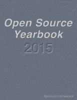

Esta página contiene enlaces a los números publicados de la revista Open Source Yearbook en 2018 - 2017 - 2016.
Página web: Revista Open Source Yearbook
Año 2017 - 2018 marzo
Descarga (PDF 10,6 MB inglés)
Año 2016 - 2017 enero
Descarga (PDF 9,51 MB inglés)

Año 2015 - 2016 marzo
Descarga (PDF 5,0 MB inglés)